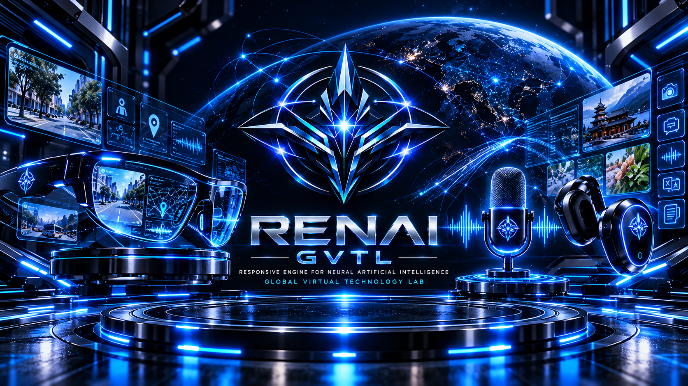

Catatan aktivitas PT RENAI GVTL Indonesia mengenai eksplorasi RENAI AI Companion dan eksperimen prototype pertama.

Pada 8 Oktober 2026 , PT RENAI GVTL Indonesia melanjutkan rangkaian penelitian dan pengembangan yang sebelumnya telah dilakukan.
Setelah sebelumnya mengeksplorasi AI Image Generator, mengembangkan gagasan awal Chat GVTL, kemudian melakukan pendalaman terhadap RENAI Router dan berbagai aspek fondasi teknologi, RENAI mulai mengeksplorasi arah baru dalam interaksi manusia dengan kecerdasan buatan.
Eksplorasi tersebut mengarah pada sebuah gagasan bernama RENAI AI Companion .
Tanggal:
8 Oktober 2026
Waktu meeting:
±22.40–23.25 WIB
Peserta:
Redian, Airin & GVTL 1 Irene
Topik:
RENAI AI Companion — Eksperimen Prototype Pertama
Dalam aktivitas ini, Redian, Airin dan GVTL 1 Irene membahas kemungkinan pengembangan AI yang tidak hanya berfungsi sebagai sistem tanya-jawab, tetapi dapat menjadi pendamping digital yang memahami konteks interaksi pengguna dan lingkungan di sekitarnya.
Gagasan yang dieksplorasi mencakup:
Konsep ini muncul dari perkembangan pemikiran RENAI mengenai bagaimana teknologi AI dapat berinteraksi secara lebih natural, kontekstual, dan dekat dengan aktivitas pengguna sehari-hari.
Pada tahap ini, RENAI belum berfokus pada pembangunan produk komersial maupun perangkat khusus.
Fokus utamanya adalah menguji gagasan dan pengalaman interaksi AI Companion melalui prototype awal.
Hasil eksperimen nantinya akan menjadi bahan evaluasi untuk menentukan apakah konsep tersebut layak dikembangkan lebih lanjut, diperbaiki, atau diarahkan ke bentuk penelitian yang berbeda.
Dengan demikian, aktivitas ini bukan merupakan peluncuran produk, melainkan bagian dari proses eksplorasi dan pembuktian konsep.
Eksperimen AI Companion tidak berdiri sendiri.
Perkembangan ini merupakan bagian dari pola R&D RENAI yang terus bergerak dari satu gagasan ke gagasan berikutnya.
Setiap aktivitas memberikan pengalaman, pembelajaran, dan pertanyaan baru yang kemudian menjadi dasar bagi eksplorasi berikutnya.
Status:
🟡 Research & Concept Exploration
Tahap:
Initial Prototype Experiment
Area: Artificial Intelligence • Human-AI Interaction • Computer Vision • Voice Interaction • Future Technology
Keterangan: RENAI AI Companion masih berada pada tahap penelitian dan eksperimen awal. Belum merupakan produk komersial dan belum tersedia untuk penggunaan publik.
RENAI masih berada dalam tahap membangun fondasi.
Tidak setiap eksperimen harus langsung menjadi produk. Sebagian eksperimen mungkin berkembang menjadi teknologi baru, sebagian lainnya dapat menjadi pembelajaran untuk penelitian berikutnya.
Yang dicatat bukan hanya hasil akhirnya, tetapi juga bagaimana setiap gagasan berkembang dari waktu ke waktu.
Date:
8 Oktober 2026
Participants:
Redian, Airin & GVTL 1 Irene
Topic:
RENAI AI Companion — Eksperimen Prototype Pertama
Status:
🟡 Research & Concept Exploration
Stage:
Initial Prototype Experiment
© PT RENAI GVTL Indonesia — Technology, Research & Development — Foundation Stage